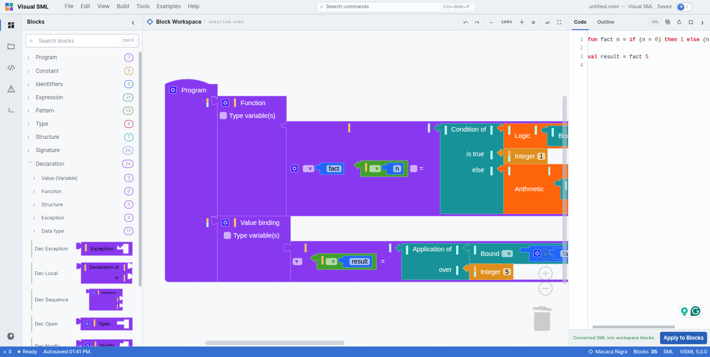
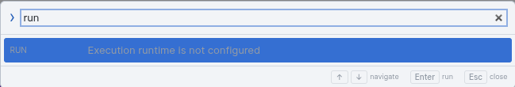

Blocks and SML text, both ways
ViSML's real engine room is a pair of translators: a generator that turns your block program into SML source text, and a parser that turns SML source text back into blocks. Neither is a toy — both are checked, mechanically, against each other.
Blocks → SML
Every block type has a corresponding generator function, keyed by block type, that emits its piece of SML source. A handful of details in that generator matter enough to call out on their own:
- Negative literals use
~. SML spells a negative integer or word as~5, not-5— the generator follows that convention rather than the more familiar minus sign. - Strings and characters are properly quoted. String literals come out
double-quoted, and character literals as SML's
#"c"form. - Reserved words are guarded. An identifier that collides with an SML keyword is caught before it reaches the generated text.
- Naked top-level expressions get wrapped. SML has no bare-expression
statement, so a top-level expression is emitted as
local _ = <expr>rather than failing to generate at all.
A custom pretty-printer then re-flows the raw generated text: consistent indentation, a blank line
between top-level declarations, aligned | alternatives in a multi-clause function or
a datatype. Because SML is layout-insensitive, none of this changes what the program
means — it only changes how it reads. The Code panel is where you see the result
live, as covered in Getting started.

SML → blocks
The other direction is a genuine hand-written recursive-descent parser for SML, not a thin wrapper around the generator run backward. It accepts the generator's own output, plus a tolerant superset of it, and builds an equivalent Blockly JSON workspace tree from whatever it parses.
The entry point is the Apply to Blocks button beneath the Code panel: paste or type SML text, click it, and the workspace rebuilds itself to match. Typing this, for instance
fun fact n = if (n = 0) then 1 else n * fact (n - 1);
val result = fact 5;and pressing Apply to Blocks produces a correct 35-block workspace and a confirming status-bar message, “Converted SML into workspace blocks.” This is the same mechanism the Factorial example uses under the hood, and it is worth trying on code you write yourself the first time you want to build something faster than dragging blocks would allow.
The round-trip suite
npm test runs a battery of SML snippets — arithmetic precedence, logic, tuples,
lists, cons/append, string concatenation, function composition
(o), typed expressions, the op prefix, and more — through
parse → generate → re-parse and checks that the result is a fixed
point: generating from the re-parsed blocks reproduces the same text. All seven of ViSML's
built-in examples pass this with zero errors.
The research paper behind ViSML reports independently that this round trip holds across all 132 SML grammar production rules the project implements — not a sample of common cases, the complete set. That is the empirical claim underneath everything said about grammar preservation in Renderers: it is not just that the toolbox looks complete, it is that nothing gets lost going in either direction.
There is no further compilation target past this. Blocks and SML source text are the only two representations ViSML translates between — there is no bytecode, no JavaScript, no WASM output. The unrelated Export Workspace as PNG feature is worth distinguishing from all of this: it is a screenshot of the visual block diagram, not a code export.
ViSML does not execute programs
Everything on this page describes translation, not execution. ViSML has no interpreter, no stepper, no abstract machine, and no comparison of evaluation strategies — a total contrast with B-Lambda's dual CbS/CbV steppers and CEK machine, or B-MJ's CESK heap machine. The bottom panel's Output tab only logs editor events — autosave, renders, conversions — never program output, because there is no program run to produce any.
The command palette says this plainly if you go looking. Filter it to “run” and the single result is a permanently disabled entry:

To actually run a program you build in ViSML, copy the generated SML out of the Code panel and feed it to a real Standard ML implementation — SML/NJ, MLton, or Poly/ML will all compile and run it as ordinary SML, because that is exactly what it is. This is the same point made early in Getting started; it is worth repeating here because it is the boundary that defines what this whole chapter is and is not about.